方向以示教视频画面为准：后排容器从画面左到右为浅紫盘、白色篮子、深棕托盘。前排摆放顺序见表，准确位置和姿态以各段初始画面为准。每次测试先清空容器，将物体恢复到对应初始布局；不移动无关物体。
布局由视频初始画面核对；操作顺序来自已确认的验证集配对表。附时间采样图和原视频链接供对照。成对视频属于同一布局类别，物体位置有细微差别。
当前推理统一使用训练提示词：pick object to container。下面的三步说明是示教任务内容，不替换推理提示词。绿色椒形玩具与绿色叶片玩具是不同物体。
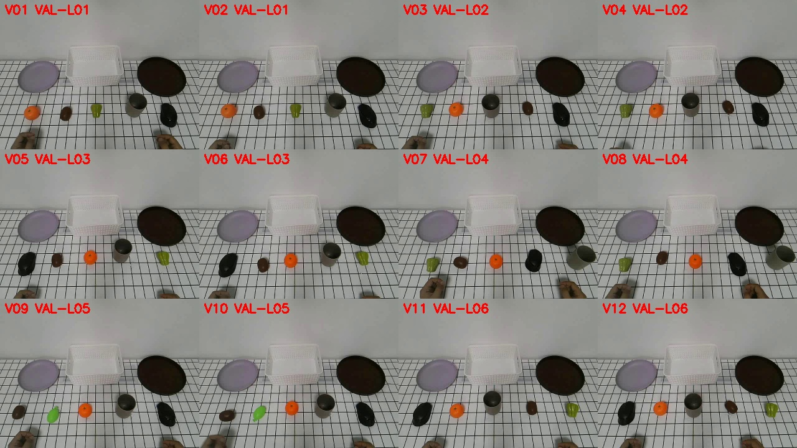
| 编号 | 前排从左到右 | 第1步 | 第2步 | 第3步 |
|---|---|---|---|---|
| V01 | 橘子、土豆、绿色椒形玩具、灰杯、鼠标 | 橘子→紫盘 | 土豆→白篮 | 鼠标→棕托盘 |
| V02 | 橘子、土豆、绿色椒形玩具、灰杯、鼠标 | 鼠标→棕托盘 | 土豆→白篮 | 橘子→紫盘 |
| V03 | 绿色椒形玩具、橘子、灰杯、土豆、鼠标 | 灰杯→白篮 | 橘子→紫盘 | 土豆→棕托盘 |
| V04 | 绿色椒形玩具、橘子、灰杯、土豆、鼠标 | 土豆→棕托盘 | 橘子→紫盘 | 灰杯→白篮 |
| V05 | 鼠标、土豆、橘子、灰杯、绿色椒形玩具 | 橘子→紫盘 | 土豆→白篮 | 鼠标→棕托盘 |
| V06 | 鼠标、土豆、橘子、灰杯、绿色椒形玩具 | 橘子→白篮 | 土豆→棕托盘 | 鼠标→紫盘 |
| V07 | 绿色椒形玩具、土豆、橘子、鼠标、灰杯 | 绿色椒形玩具→紫盘 | 土豆→白篮 | 鼠标→棕托盘 |
| V08 | 绿色椒形玩具、土豆、橘子、鼠标、灰杯 | 鼠标→棕托盘 | 绿色椒形玩具→紫盘 | 土豆→白篮 |
| V09 | 土豆、绿色叶片玩具、橘子、灰杯、鼠标 | 绿色叶片玩具→白篮 | 橘子→紫盘 | 灰杯→棕托盘 |
| V10 | 土豆、绿色叶片玩具、橘子、灰杯、鼠标 | 灰杯→棕托盘 | 绿色叶片玩具→白篮 | 橘子→紫盘 |
| V11 | 鼠标、橘子、灰杯、土豆、绿色椒形玩具 | 橘子→紫盘 | 鼠标→棕托盘 | 土豆→白篮 |
| V12 | 鼠标、橘子、灰杯、土豆、绿色椒形玩具 | 土豆→白篮 | 鼠标→棕托盘 | 橘子→紫盘 |
前排从左到右：橘子、土豆、绿色椒形玩具、灰杯、鼠标
① 橘子→紫盘；② 土豆→白篮；③ 鼠标→棕托盘
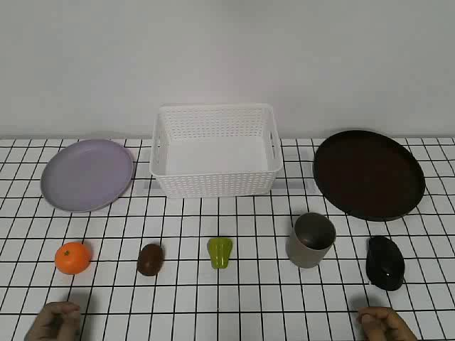
/mnt/sfs_turbo/lijianwen/Datasets/piperpika_10_20/pika_aloha_10_20_human_verify/human_video/episode_20261020_202638_410615688/video.mp4前排从左到右：橘子、土豆、绿色椒形玩具、灰杯、鼠标
① 鼠标→棕托盘；② 土豆→白篮；③ 橘子→紫盘
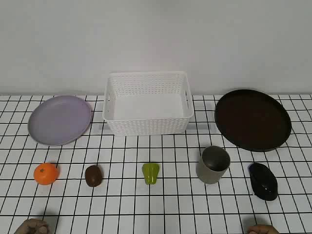
/mnt/sfs_turbo/lijianwen/Datasets/piperpika_10_20/pika_aloha_10_20_human_verify/human_video/episode_20261020_202711_743788443/video.mp4前排从左到右：绿色椒形玩具、橘子、灰杯、土豆、鼠标
① 灰杯→白篮；② 橘子→紫盘；③ 土豆→棕托盘
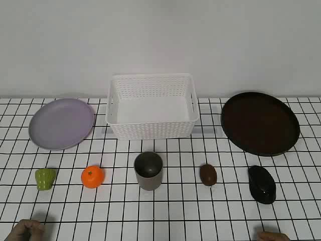
/mnt/sfs_turbo/lijianwen/Datasets/piperpika_10_20/pika_aloha_10_20_human_verify/human_video/episode_20261020_202748_42908462/video.mp4前排从左到右：绿色椒形玩具、橘子、灰杯、土豆、鼠标
① 土豆→棕托盘；② 橘子→紫盘；③ 灰杯→白篮
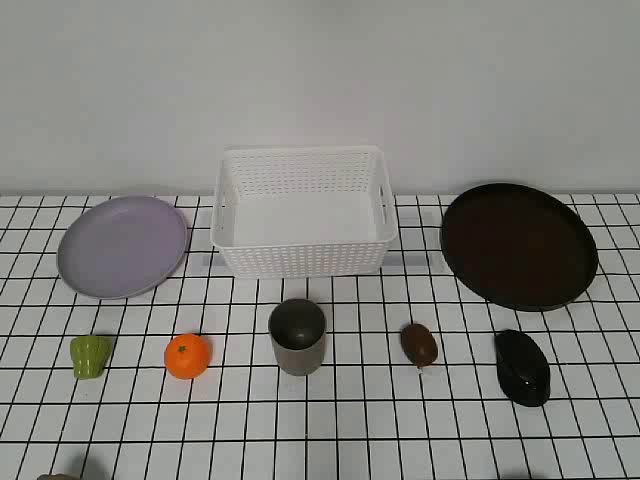
/mnt/sfs_turbo/lijianwen/Datasets/piperpika_10_20/pika_aloha_10_20_human_verify/human_video/episode_20261020_202819_175787613/video.mp4前排从左到右：鼠标、土豆、橘子、灰杯、绿色椒形玩具
① 橘子→棕托盘；② 土豆→紫盘；③ 鼠标→白篮
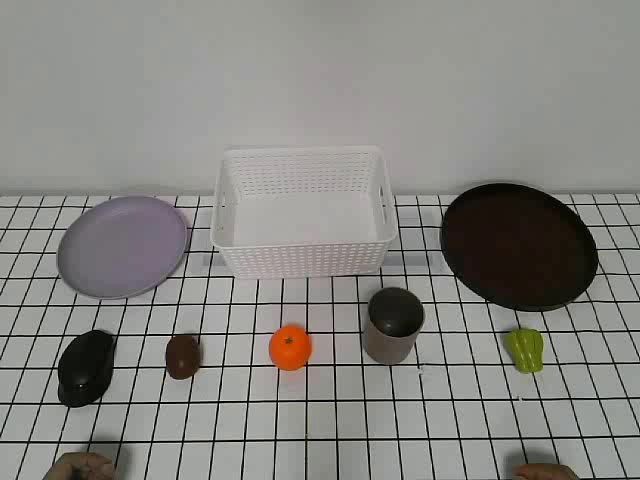
/mnt/sfs_turbo/lijianwen/Datasets/piperpika_10_20/pika_aloha_10_20_human_verify/human_video/episode_20261020_202900_620649231/video.mp4前排从左到右：鼠标、土豆、橘子、灰杯、绿色椒形玩具
① 橘子→白篮；② 土豆→棕托盘；③ 鼠标→紫盘
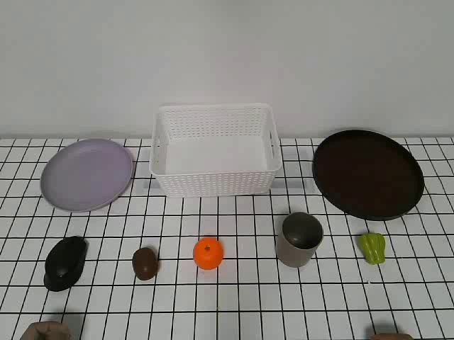
/mnt/sfs_turbo/lijianwen/Datasets/piperpika_10_20/pika_aloha_10_20_human_verify/human_video/episode_20261020_202930_419558600/video.mp4前排从左到右：绿色椒形玩具、土豆、橘子、鼠标、灰杯
① 绿色椒形玩具→紫盘；② 土豆→白篮；③ 鼠标→棕托盘
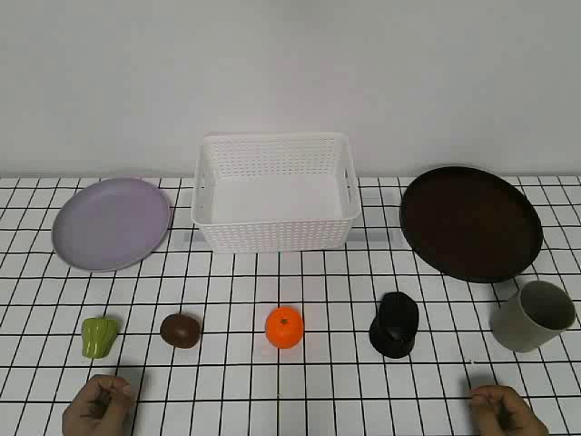
/mnt/sfs_turbo/lijianwen/Datasets/piperpika_10_20/pika_aloha_10_20_human_verify/human_video/episode_20261020_203012_743370662/video.mp4前排从左到右：绿色椒形玩具、土豆、橘子、鼠标、灰杯
① 鼠标→棕托盘；② 土豆→白篮；③ 绿色椒形玩具→紫盘
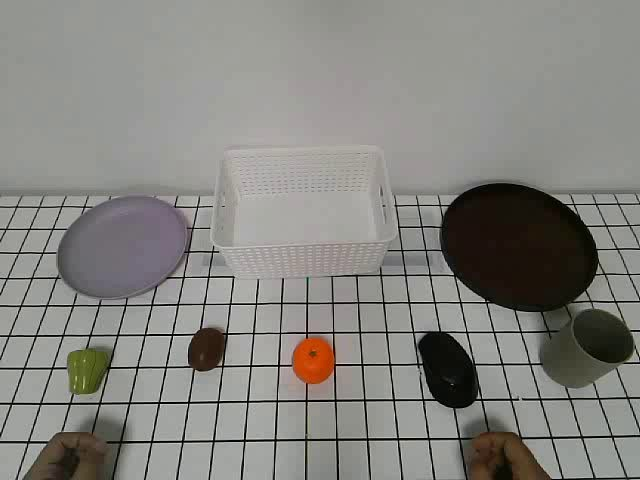
/mnt/sfs_turbo/lijianwen/Datasets/piperpika_10_20/pika_aloha_10_20_human_verify/human_video/episode_20261020_203040_199068641/video.mp4前排从左到右：土豆、绿色叶片玩具、橘子、灰杯、鼠标
① 绿色叶片玩具→白篮；② 橘子→紫盘；③ 土豆→棕托盘
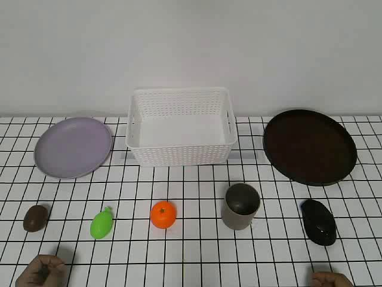
/mnt/sfs_turbo/lijianwen/Datasets/piperpika_10_20/pika_aloha_10_20_human_verify/human_video/episode_20261020_203122_503645664/video.mp4前排从左到右：土豆、绿色叶片玩具、橘子、灰杯、鼠标
① 土豆→棕托盘；② 橘子→紫盘；③ 绿色叶片玩具→白篮
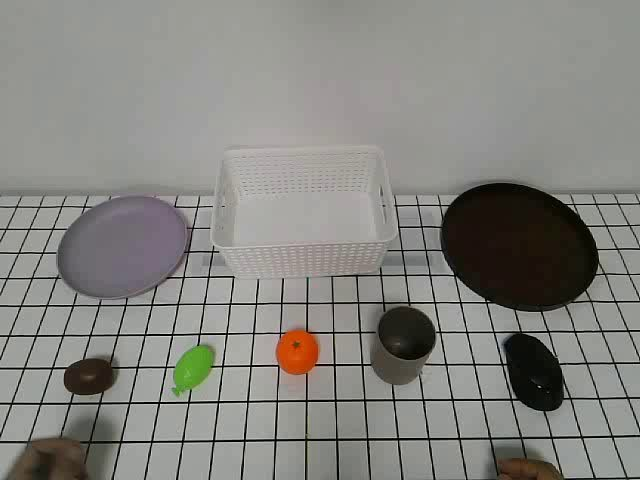
/mnt/sfs_turbo/lijianwen/Datasets/piperpika_10_20/pika_aloha_10_20_human_verify/human_video/episode_20261020_203150_766939630/video.mp4前排从左到右：鼠标、橘子、灰杯、土豆、绿色椒形玩具
① 橘子→紫盘；② 土豆→白篮；③ 鼠标→棕托盘
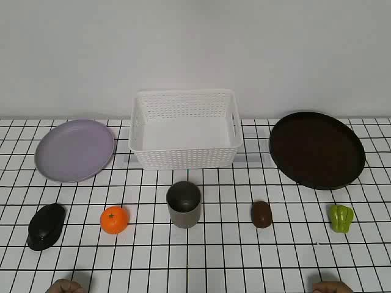
/mnt/sfs_turbo/lijianwen/Datasets/piperpika_10_20/pika_aloha_10_20_human_verify/human_video/episode_20261020_203233_885175396/video.mp4前排从左到右：鼠标、橘子、灰杯、土豆、绿色椒形玩具
① 鼠标→棕托盘；② 土豆→白篮；③ 橘子→紫盘
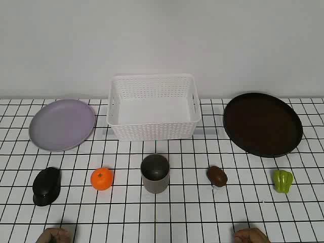
/mnt/sfs_turbo/lijianwen/Datasets/piperpika_10_20/pika_aloha_10_20_human_verify/human_video/episode_20261020_203300_37214077/video.mp4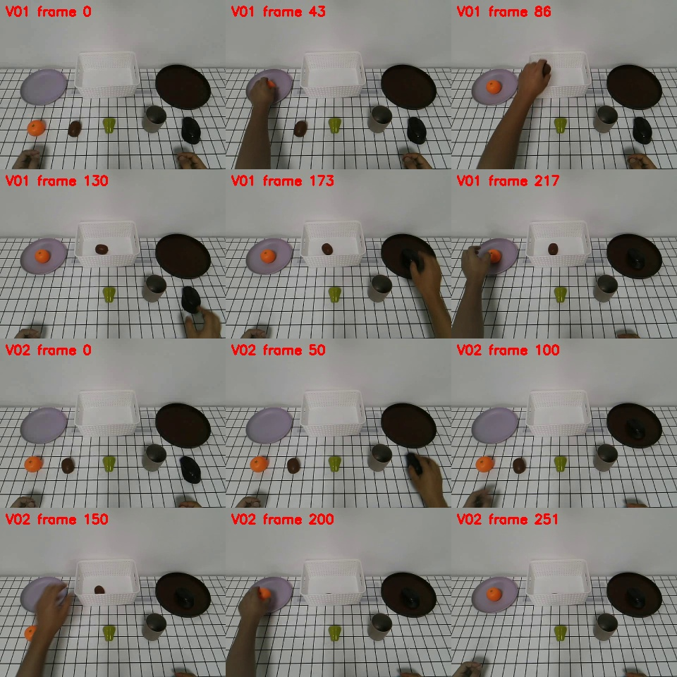
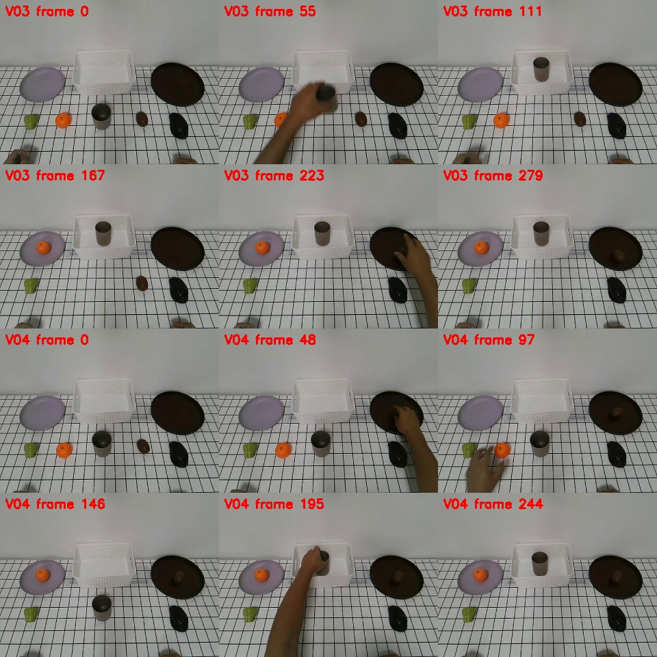
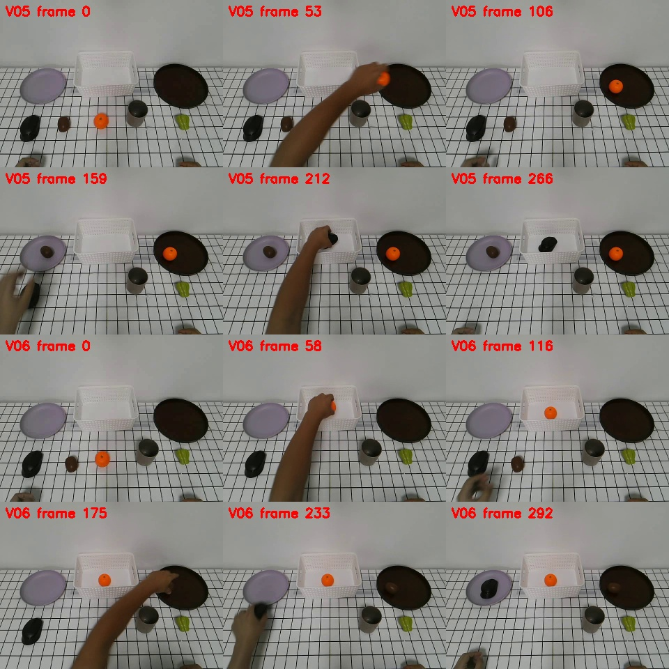
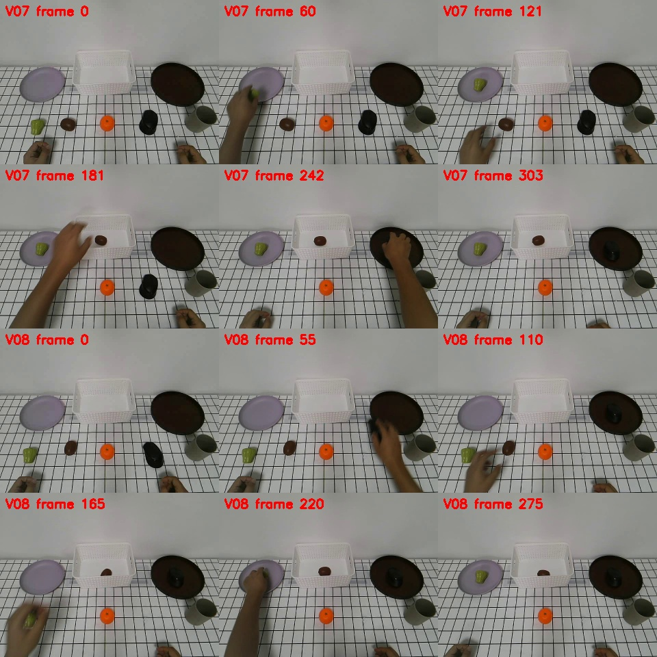
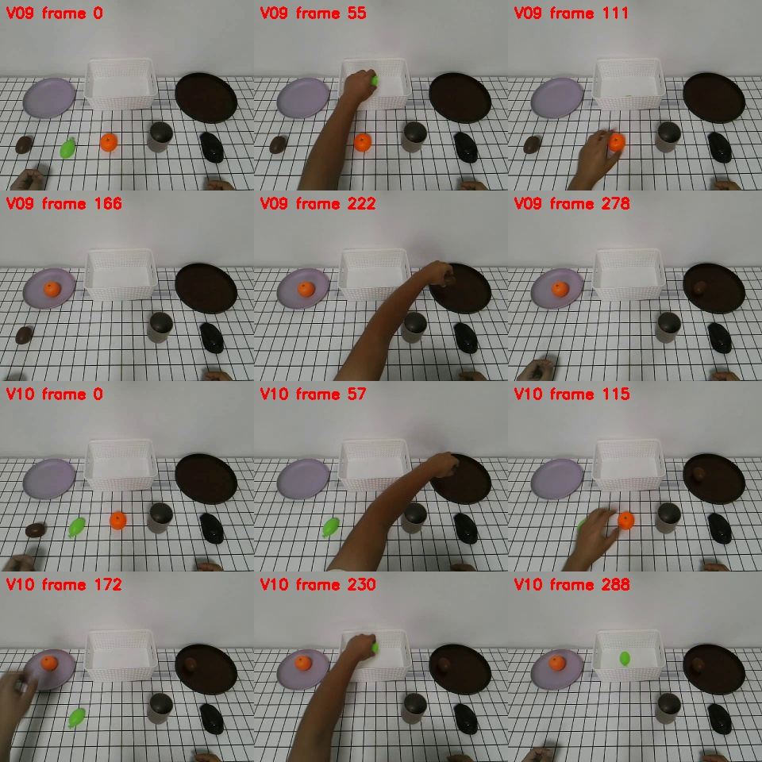
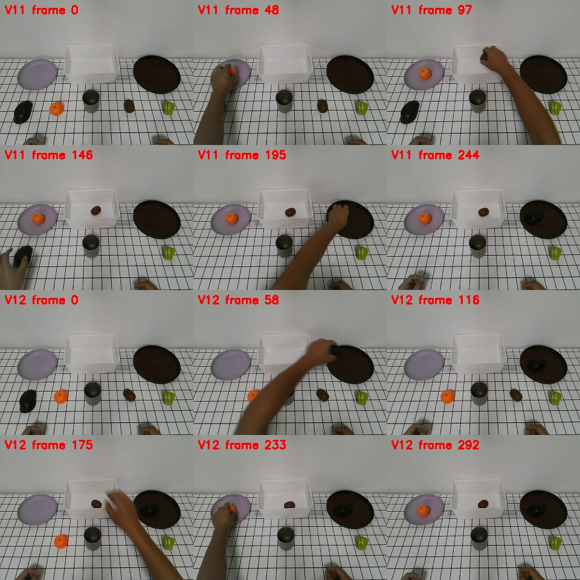